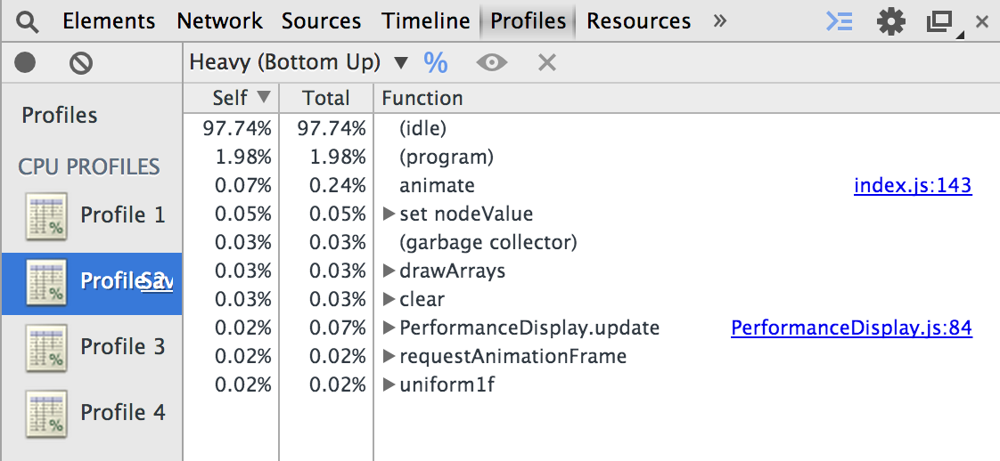
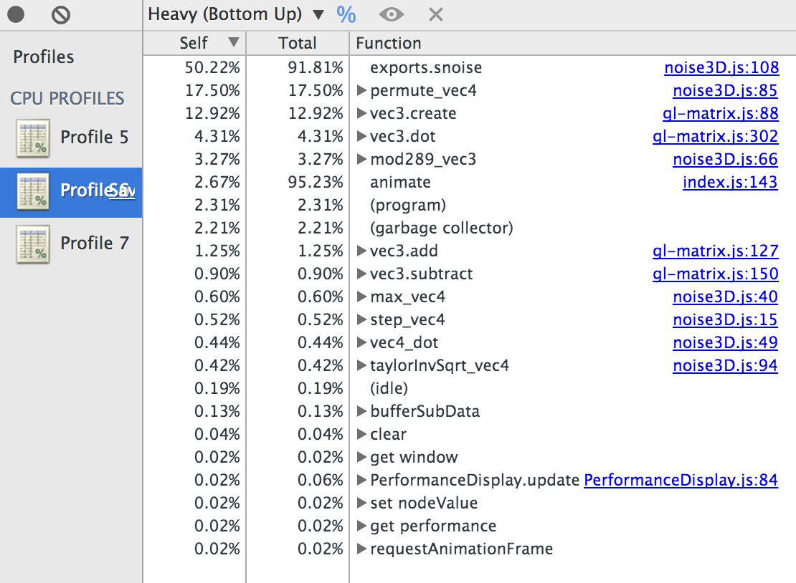

Now that Internet Explorer 11 supports WebGL, it is a good time to look at WebGL performance across browsers, that is, which browser performs best with our WebGL engine: Chrome, Firefox, or IE?
There are too many variables to answer this definitively given the large variation in platforms, hardware, and use cases. In most cases, I suspect performance will come down to the browser's JavaScript performance.
We expect the same performance across browsers on the same OS and hardware since they are using the same GPU. However, there are differences.
On Windows, Chrome and Firefox use ANGLE to translate WebGL to D3D 9 (and soon D3D 11), where as IE has its own WebGL to D3D 11 translation. This means that GLSL to HLSL translation could generate different code (which can be investigated with WEBGL_debug_shaders which no longer requires privileged access). In addition, WebGL implementations vary in their multiprocess architecture, often workaround driver bugs, and need to perform validation beyond the driver like making sure indices passed to drawElements are in range. All of this leads to potential performance differences between browsers.Our performance tests are not exhaustive or even representative; they are a starting point for understanding. We'll look at GPU-bound and CPU-bound cases for a microbenchmark and then actual use cases in our engine, Cesium.
Our microbenchmark renders a tessellated plane. At each time step, a simplex noise function (from webgl-noise) is evaluated at each vertex to compute its height. The vertex's color is also based on its height. The result is an animated wave that looks like this:
We have two implementations. A GPU-bound one that evaluates the noise function in the vertex shader and a CPU-bound one that evaluates the noise function in JavaScript and writes it to a streaming vertex buffer. We originally coded this for OpenGL Insights along with a C++ version to show that in the GPU-bound case, OpenGL and WebGL have very similar performance. Here we reuse it to compare browsers.
Simplex noise has a high arithmetic intensity meaning that there is a lot of compute repetitive to memory access, e.g., lots of math and not a lot of texture reads. GPUs thrive on algorithms with high arithmetic intensity. In our GPU-bound test, we are actually bound in the vertex shader, which is rare in practice, but given today's unified shader architectures, this is a similar test to being bound in the fragment shader.
First, let's look at the GPU-bound case where the noise function is evaluated in the vertex shader. The plane tessellation is triangle soup. A 2K x 2K tessellation has 8,380,418 triangles ((2048 - 1) * (2048 - 1) * 2) for a total of 25,141,254 vertices (8,380,418 * 3), each of which evaluates the noise function since there there are indices for vertex reuse and caching.
Before we look at the performance, let's take a look in the profiler to verify that we are GPU-bound:

In several profile runs, (idle) is always 97% or more. This profile actually shows the FPS display and a tad of the GC due to string manipulation for the FPS display. That is how little CPU we are using.
We expect similar performance across browsers. The results are:
Mac OS 10.9.2 with NVIDIA GeForce GT 650M
TODO: discuss
Next, let's look at the CPU-bound test the evaluates the noise function per-vertex in JavaScript and writes the results to a streaming vertex buffer. First, let's look at the profile.

We are indeed CPU-bound as (idle) takes up well less than 1% and the vast majority of the time is spent in the noise function and helpers as expected. We also see the GC on the profile at over 2%. This is because our JavaScript port of the GLSL noise function is naive and allocates many small arrays for vectors. bufferSubData allow shows up on this profile showing the CPU overhead (in this thread) of updating the streaming vertex buffer.
And now the numbers:
Mac OS 10.9.2 with NVIDIA GeForce GT 650M
TODO: discuss
TODO: mention chrome://gpu TODO: asm.js TODO: consider tools TODO: what extensions does it have TODO: compare webgl reports